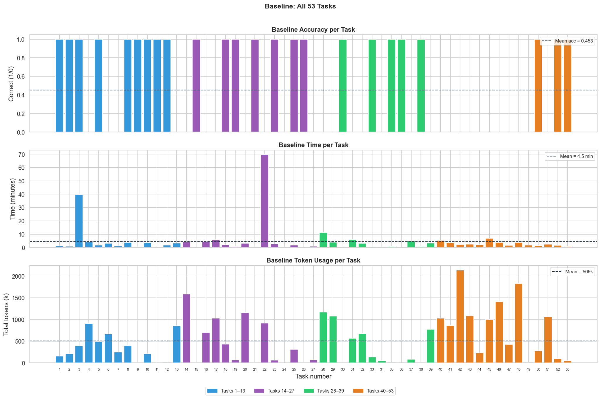
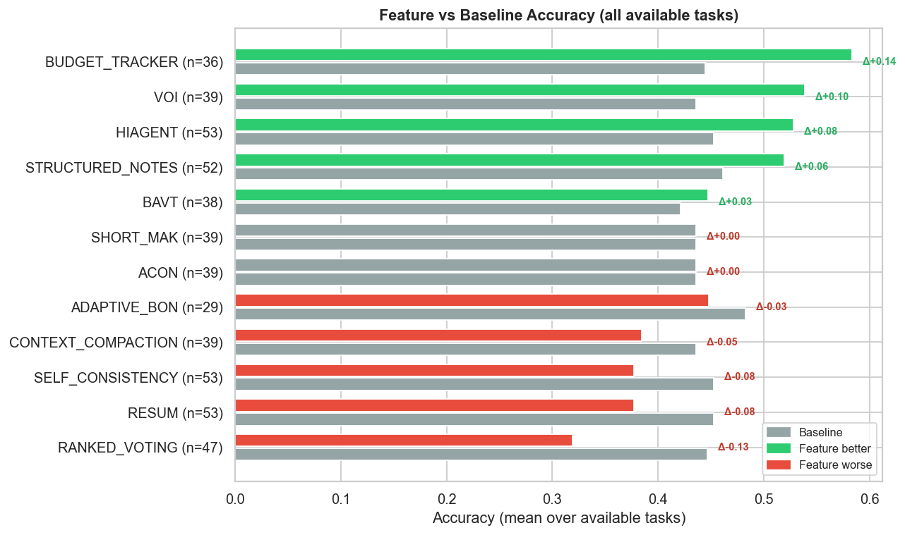
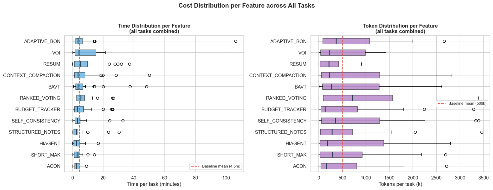
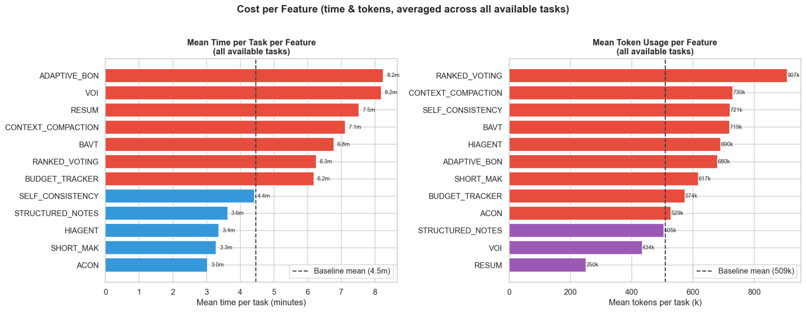
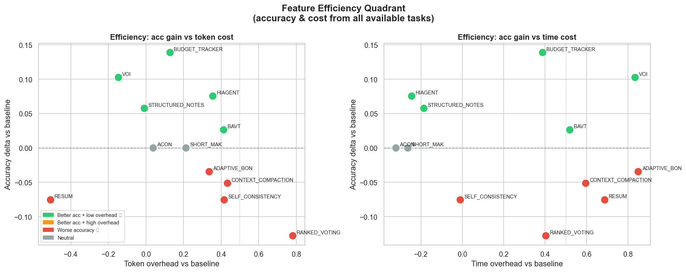
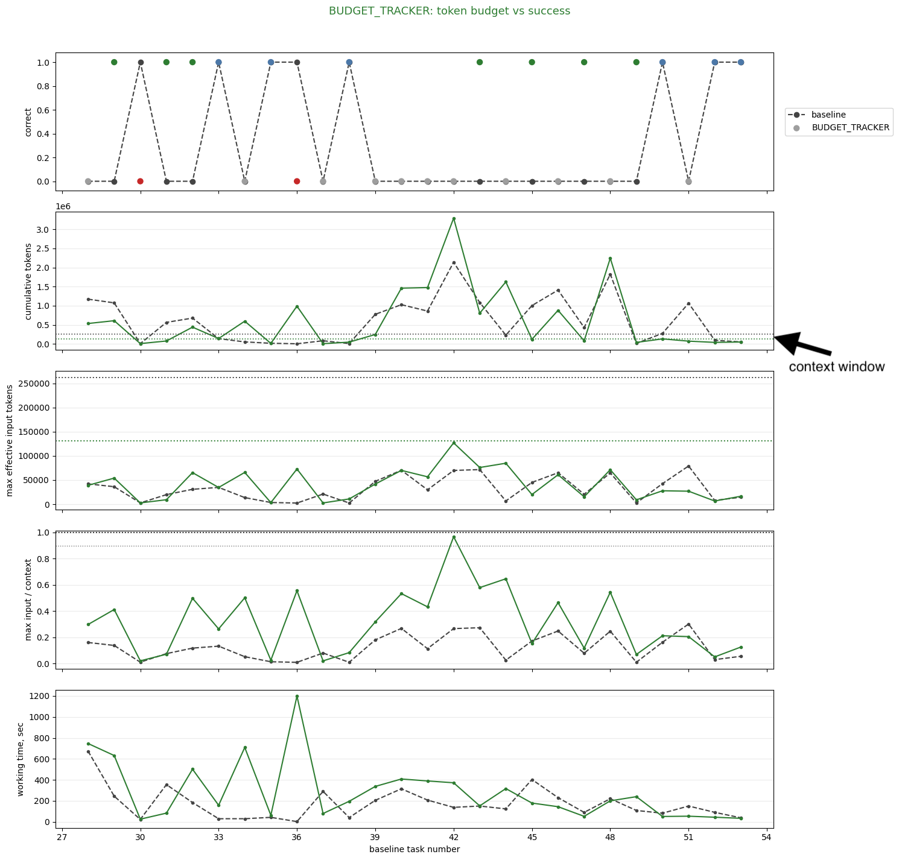
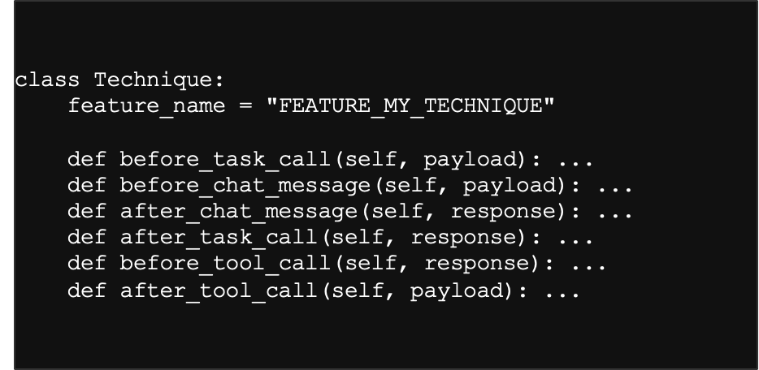
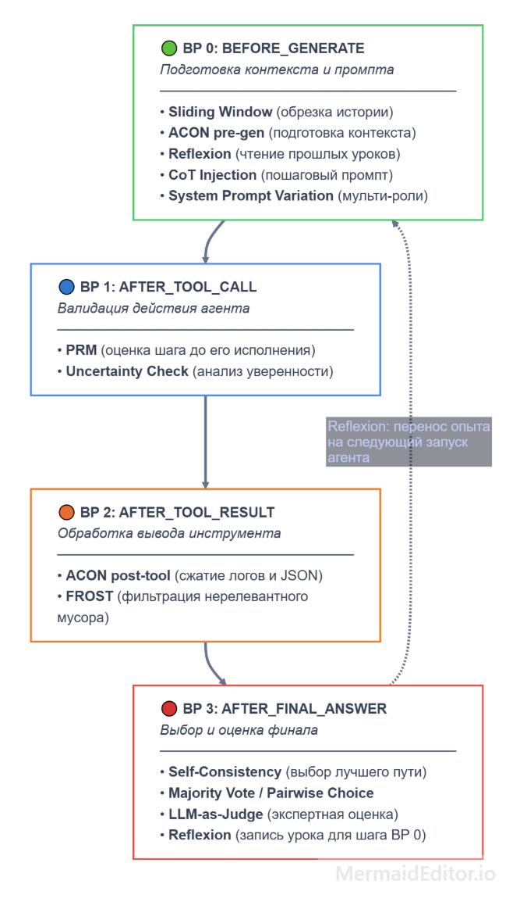
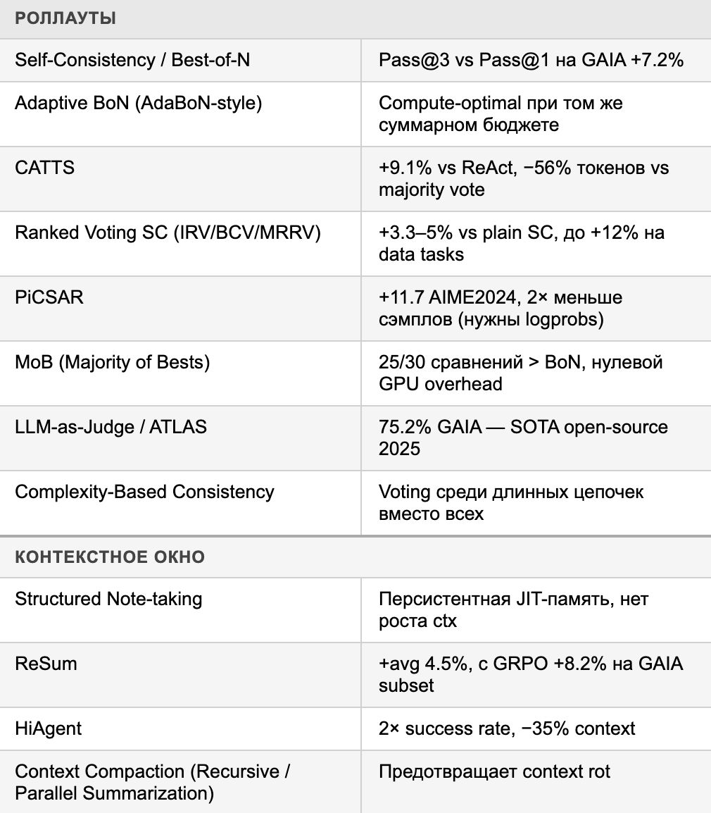
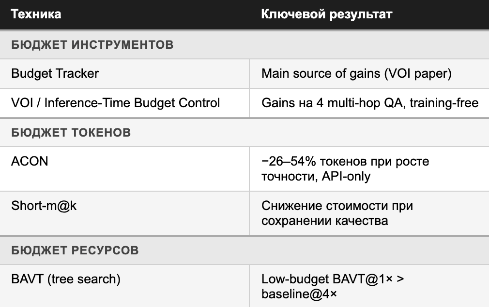

Result summary
The experiment checks whether agent behavior on GAIA can be improved with additional inference-time compute: Best-of-N, voting, judge/verification, context management, and budget-aware techniques. Current setup: GAIA Level 1, 53 tasks, Qwen 3.5 9B, and the project launcher infrastructure.
Baseline run
The baseline was evaluated on all 53 GAIA Level 1 tasks. Mean accuracy was 0.453, mean runtime was 4.5 minutes per task, and mean token usage was 509k tokens per task.

Technique comparison
The comparison shows that test-time techniques are not uniformly beneficial. The best gains came from BUDGET_TRACKER, VOI, HIAGENT, STRUCTURED_NOTES, and BAVT. SHORT_MAK and ACON were neutral. ADAPTIVE_BON, CONTEXT_COMPACTION, SELF_CONSISTENCY, RESUM, and RANKED_VOTING reduced accuracy in the current setup.
| Technique | Available tasks | Accuracy delta | Observation |
|---|---|---|---|
| BUDGET_TRACKER | 36 | +0.14 | Best accuracy gain among tested techniques. |
| VOI | 39 | +0.10 | Strong gain with noticeable time overhead. |
| HIAGENT | 53 | +0.08 | Positive effect on the full task set. |
| STRUCTURED_NOTES | 52 | +0.06 | Improves accuracy while reducing mean time and staying close to baseline token usage. |
| BAVT | 38 | +0.03 | Small gain with extra cost. |
| SHORT_MAK, ACON | 39 | +0.00 | Neutral accuracy effect. |
| ADAPTIVE_BON, CONTEXT_COMPACTION, SELF_CONSISTENCY, RESUM, RANKED_VOTING | 29-53 | -0.03 to -0.13 | Reduced accuracy in the current configuration. |

Cost
Cost was compared along two axes: time per task and token usage. Baseline means were 4.5 minutes and 509k tokens per task. ACON, SHORT_MAK, HIAGENT, and STRUCTURED_NOTES were faster on average. RESUM and VOI used fewer tokens than baseline, while STRUCTURED_NOTES stayed near baseline token usage.


Real usage
The efficiency quadrant shows the trade-off between accuracy delta and overhead. STRUCTURED_NOTES is a strong lightweight technique: it improves accuracy without extra token/time budget. HIAGENT also improves accuracy with low overhead. BUDGET_TRACKER gives the largest gain but requires additional compute.

Budget Tracker
The Budget Tracker chart shows success per task, cumulative tokens, max effective input tokens, context-window share, and working time. Dashed lines in the middle charts mark model context windows: baseline 256k and BUDGET_TRACKER 128k.

Schemes and tables
The diagrams below connect the results with the proxy architecture and the technique selection process.




Limitations
- Limited compute budget.
- Only GAIA Level 1 tasks were evaluated.
- A single small model, Qwen 3.5 9B, was used.
- Only one dataset is considered.
- Statistical significance without Level 2 remains unclear.
Conclusions
Technique selection can increase benchmark accuracy. This suggests that naive scaling-law estimates for agentic inference may be systematically low if they ignore inference-time interventions.
- BUDGET_TRACKER produced the largest accuracy gain: +0.14.
- VOI produced +0.10 accuracy but needs careful accounting for time overhead.
- STRUCTURED_NOTES is especially practical: +0.06 accuracy while reducing mean time and staying close to baseline token usage.
- Naive SELF_CONSISTENCY and RANKED_VOTING can regress in this setup.
- Next steps include testing technique combinations, writing a LessWrong post, and extracting reusable components:
gaia-experiment-launcherandtts-proxy-framework.